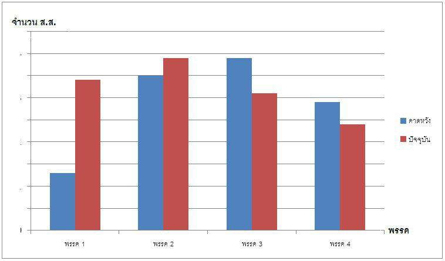
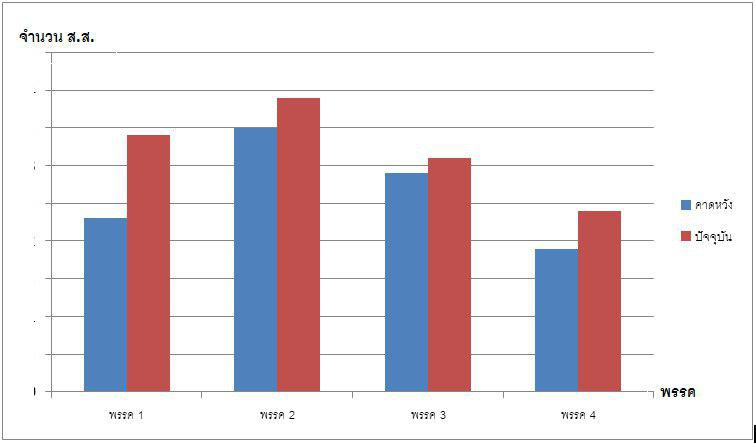
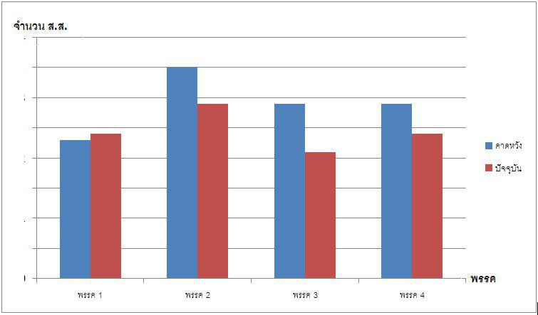

<!--
  Generated template for the GraphPage page.

  See http://ionicframework.com/docs/components/#navigation for more info on
  Ionic pages and navigation.
-->
<ion-header>

  <ion-navbar>
    <ion-title>Graph</ion-title>
  </ion-navbar>

</ion-header>


<ion-content padding>

  <ion-card>
    <ion-card-title text-center>
      <b>ส.ส. ทั้งหมด</b>
    </ion-card-title>
    
  </ion-card>

  <ion-card>
      <ion-card-title text-center>
        <b>ส.ส. แบ่งเขต</b>
      </ion-card-title>
      
    </ion-card>

    <ion-card>
        <ion-card-title text-center>
          <b>ส.ส. สัดส่วน</b>
        </ion-card-title>
        
      </ion-card>

</ion-content>